The transfer function of the filter is,
The order of the filter is,
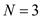.
The transmission zeros of the filter are,
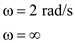
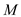 is the number of transfer function zeros or transmission zeros.
In this case, 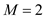.
The natural modes of the filter are,
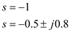
The dc gain is,
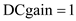
From the given transmission modes of the filter, the denominator is,
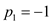
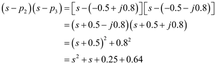 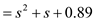
Zeros at 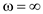 gives the numerator as follows:
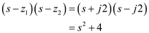
Now the transfer function is,
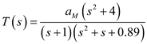 …… (1)
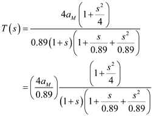
The dc gain is,
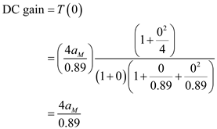 .
Substitute 1 for dc gain in the equation.
Substitute 0.2225 for in equation (1).
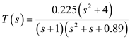
Thus, the transfer function of the third-order low-pass filter is,
.